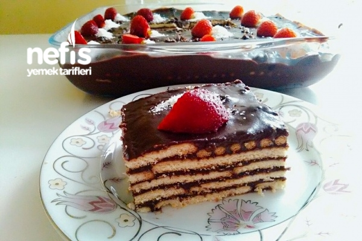
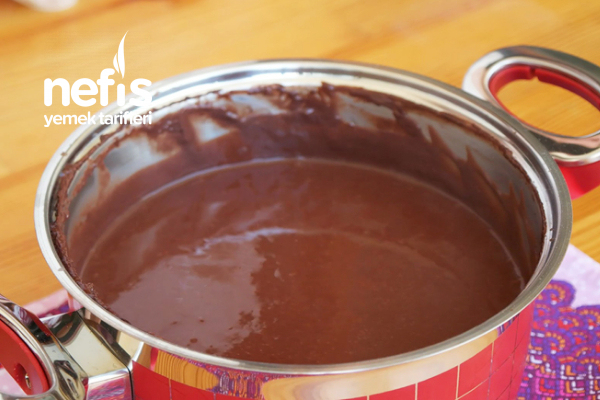
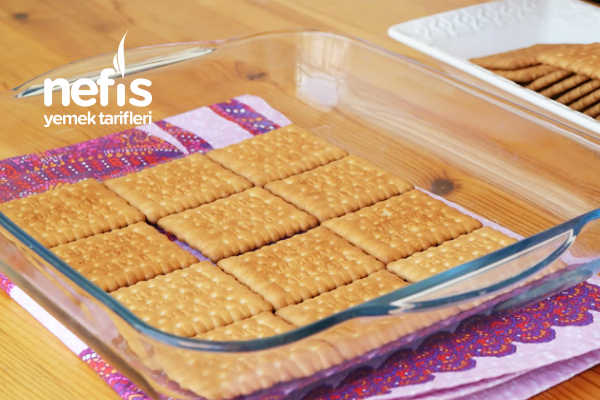
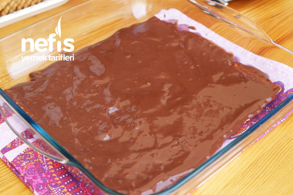
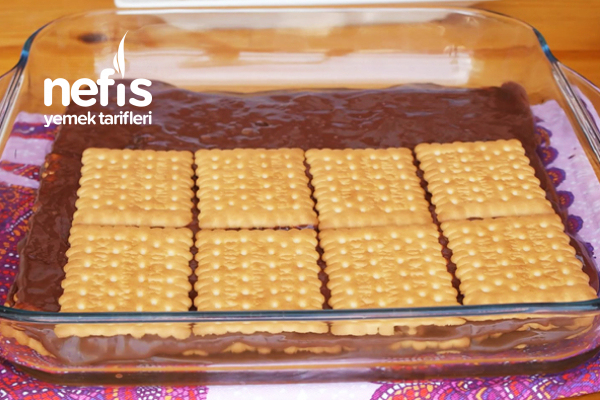
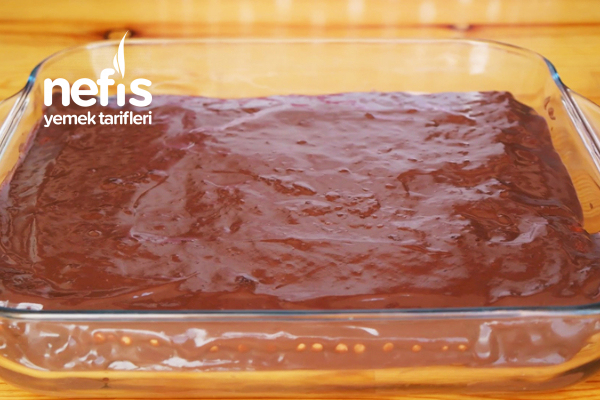
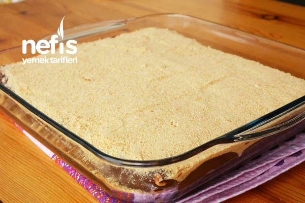
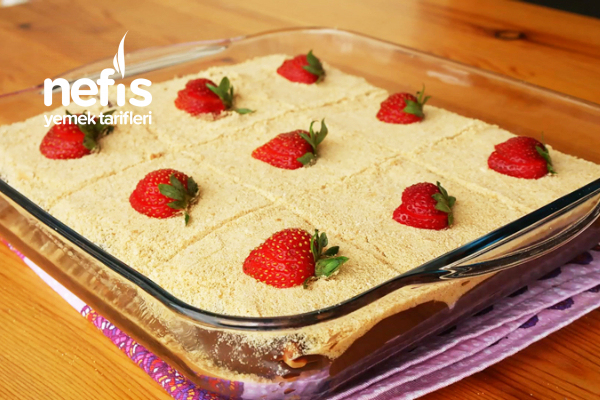
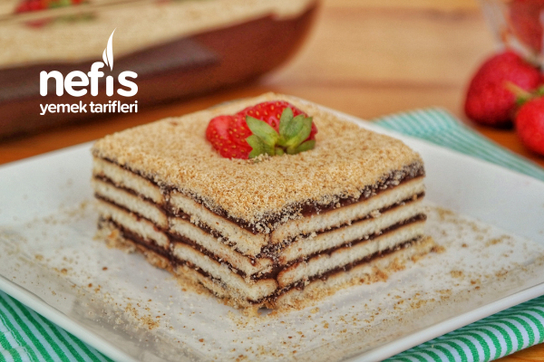

...Çikolatalı Pasta...
Tarifin Hikayesi
Sizi çocukluğunuza götürecek nostaljik bir pasta tarifi.. Lezzetini hiç kaybetmeyen, günümüzde de çok sevilen, özellikle çocukların bayılarak yediği bisküvili pasta tarifiyle karşınızdayım. Altında yumuşamış bisküvileri, üzerinde kakaolu pudingi ile tam da ağzınıza layık. Denememiş olma ihtimalinizin çok düşük olduğu ancak yine de bir yerlerde denemeyenler varsa ve bisküvili pasta nasıl yapılır? diye düşünüyorlarsa buyursunlar tarifime. Denemeyi ve defterinize eklemeyi unutmayın. Şimdiden afiyet olsun. :)

Bisküvili Pasta Tarifi İçin Malzemeler
- 3 yemek kaşığı un
- 4 yemek kaşığı kakao
- 1 su bardağı toz şeker
- 6 su bardağı süt
- 1 yemek kaşığı tereyağı
- 1 paket vanilya
- 3 paket petibör bisküvi
Üzeri İçin
Bisküvili Pasta Tarifi Nasıl Yapılır?
- İlk olarak muhallebimizi hazırlayalım. Bunun için uygun bir tencereye un, kakao, toz şeker ve sütü alalım ve karıştıralım.
.jpg)
-
Tencereyi ocağa alalım ve muhallebi koyulaşıncaya kadar karıştırarak pişirelim.

- Koyulaşan muhallebimizi ocaktan alalım, içerisine tereyağı ve vanilyayı ekleyerek karıştıralım.

- Orta boy kare borcama petibör bisküvimizden bir sıra dizelim.

- Üzerine hazırladığımız muhallebiyi boşaltarak yayalım.

- Muhallebiyi yaydıktan sonra 2. kata geçelim.

- Aynı işlemi uygulayarak 4 kat bisküvi 4 kat muhallebi olacak şekilde pastamızı tamamlayalım.

- Oda sıcaklığına geldikten sonra pastayı en az 2 saat buzdolabında bekletelim

- Pastamızı dolaptan aldıktan sonra üzerine rondodan geçirilmiş bisküvilerle kaplayalım.

-
Daha sonra dilimleyip süsleyerek servis edelim. Afiyet olsun :)
Bisküvili pasta yapmanın püf noktaları
- Pastayı yapacağınız kabın ilk katına direkt bisküvileri dizmemelisiniz. Pastanızın yumuşak olması için ilk kata hazırladığınız pudingten dökerek yaymanız daha lezzetli olmasını sağlayacaktır.
- Pastanızı hazırladıktan sonra pastanın kendine gelmesi ve daha lezzetli olması için buzdolabında yaklaşık 1 saat kadar dinlendirmelisiniz.
AFİYET OLSUNNNNN